EMBEDDING AND METRIZATION
The development of general topology has followed an evolutionary pattern which occurs frequently in mathematics. One begins by observing similarities and recurring arguments in several situations which superficially seem to bear little resemblance to each other. We then attempt to isolate the concepts and methods which are common to the various examples, and if the analysis has been sufficiently penetrating we may find a theory containing many or all of our examples, which in itself seems worthy of study. It is in precisely this way, after much experimentation, that the notion of a topological space was developed. It is a natural product of a continuing consolidation, abstraction, and extension process. Each such abstraction, if it is to contain the examples from which it was derived in more than a formal way, must be tested to find whether we have really found the central ideas involved. This testing is usually done by comparing the abstractly constructed object with the objects from which it derived. In this case we want to find whether a topological space, at least under some reasonable restrictions, must necessarily be one of the particular concrete spaces from which the notion is derived. The “standard” examples with which we compare spaces are cartesian products of unit intervals and metric spaces. In this chapter the elementary properties of metric and pseudo-metric spaces are developed, and necessary and sufficient conditions are given under which a space is a copy of a metric space or of a subspace of the cartesian product of intervals.
A word of caution: the notion of a topological space by no means includes all of the properties which metric spaces possess. In chapter 6 a different and more penetrating abstraction of the concept of a metric space is made.
EXISTENCE OF CONTINUOUS FUNCTIONS
In this section we prove four lemmas, all part of a program to construct real-valued continuous functions on topological spaces. For the moment we are concerned with a rather special sort of topological space. A space is normal * iff for each disjoint pair of closed sets, A and B, there are disjoint open sets U and V such that A ⊂ U and B ⊂ V. A T4-space is a normal space which is T1 ({x} is closed for each x). If it is agreed that a set U is a neighborhood of a set A iff A is a subset of the interior U0 of U, then the definition of normality can be stated: a space is normal iff disjoint closed sets have disjoint neighborhoods. There is another restatement of the condition which is also suggestive. A family of neighborhoods of a set is a base for the neighborhood system of the set iff every neighborhood of the set contains a member of the family. If W is a neighborhood of a closed subset A of a normal space X, then there are disjoint open sets U and V such that A ⊂ U and X ~ W0 ⊂ V, and hence the arbitrary neighborhood W of A contains the closed neighborhood U–. Consequently the family of closed neighborhoods of a closed set A is a base for the neighborhood system of A if the space is normal. The converse is also true, for if A and B are disjoint closed sets and W is a closed neighborhood of A which is contained in X ~ B, then W0 and X ~ W are disjoint open neighborhoods of A and B respectively.
Every discrete space and every indiscrete space is normal and consequently a normal space need not be Hausdorff and may fail to satisfy the first or second axiom of countability. However, a T4-space (T1 and normal) is surely a Hausdorff space. A closed subset of a normal space is, with the relative topology, normal. However, subspaces, products, and quotient spaces of normal spaces may not be normal. (See 4.E, 4.F.)
There is a condition which for T1-spaces is intermediate to Hausdorff and normal, and under certain circumstances implies normality. A topological space is regular iff for each point x and each neighborhood U of x there is a closed neighborhood V of x such that V ⊂ U; that is, the family of closed neighborhoods of each point is a base for the neighborhood system of the point. An equivalent statement: for each point x and each closed set A, if  , then there are disjoint open sets U and V such that x ε U and A ⊂ V regular space which is also T1 is called a T3-space. Recall that a Lindelöf space is a topological space such that each open cover has a countable subcover.
, then there are disjoint open sets U and V such that x ε U and A ⊂ V regular space which is also T1 is called a T3-space. Recall that a Lindelöf space is a topological space such that each open cover has a countable subcover.
1 LEMMA (TYCHONOFF) Each regular Lindelöf space is normal.
PROOF Suppose A and B are closed disjoint subsets of X. Because X is regular, for each point of A there is a neighborhood whose closure fails to intersect B and consequently the family at of all open sets whose closures do not intersect B is a cover of A. Similarly, the family  of all open sets whose closures do not intersect A is a cover of B, and 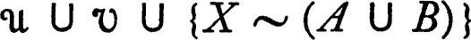 is a cover of X. There is then a sequence {Un, n ε ω} of members of
of all open sets whose closures do not intersect A is a cover of B, and 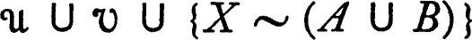 is a cover of X. There is then a sequence {Un, n ε ω} of members of  which covers A, and a sequence {Vn, n ε ω} of members of
which covers A, and a sequence {Vn, n ε ω} of members of  which covers B. Let 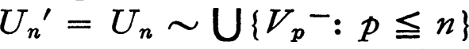 and let 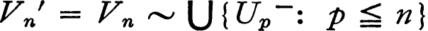 since Un′ ∩ Vm is void for m ≦ n, it follows that Un′ ∩ Vm′ is void for m ≦ n. Applying the same argument with the roles of U and V interchanged, Un′ ∩ Vm′ is void for all m and n and consequently 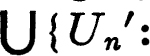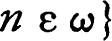 is disjoint from 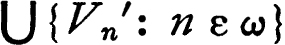. Finally, Vp– ∩ A and Up– ∩ B are void for all p and hence the open disjoint sets 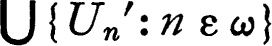 and 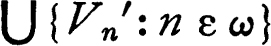 contain A and B respectively. ∎
which covers B. Let 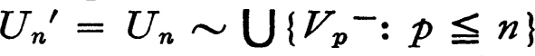 and let 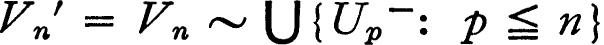 since Un′ ∩ Vm is void for m ≦ n, it follows that Un′ ∩ Vm′ is void for m ≦ n. Applying the same argument with the roles of U and V interchanged, Un′ ∩ Vm′ is void for all m and n and consequently 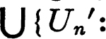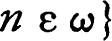 is disjoint from 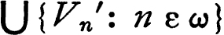. Finally, Vp– ∩ A and Up– ∩ B are void for all p and hence the open disjoint sets 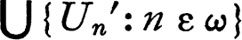 and 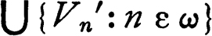 contain A and B respectively. ∎
In particular, a regular topological space satisfying the second axiom of countability is always normal.
We now begin the construction of continuous real-valued functions. If A and B are disjoint closed sets, we want to construct a continuous real-valued function which is zero on A and one on B, with all values in the closed interval [0,1]. Instead of constructing the function f directly we construct sets which correspond (approximately) to sets of the form {x: f(x) < t}. The two following lemmas show the relation between a family of subsets and a real-valued function.
2 LEMMA Suppose that for each member t of a dense subset D of the positive reals Ft is a subset of a set X such that
(a)if t < s, then Ft ⊂ Fs; and
(b) .
.
For x in X let f(x) = inf {t: x ε Ft}. Then 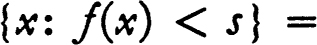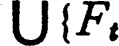: t ε D and t < s} and 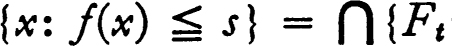: t ε D and t > s} for each real number s.
PROOF The calculation is direct. The set {x: f(x) < s} = {x: inf {t: x ε Ft} < s}, and since the infimum is less than s iff some member of {t: x ε Ft} is less than s, the set {x: f(x) < s} is the set of all x such that for some t, t < s and x ε Ft; that is, 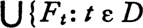 and t < s}. This establishes the first equality. To prove the second notice that inf {t: x ε Ft} ≦ s if for each u greater than s there is t < u such that x ε Ft. Conversely, if for each t in D such that t > s it is true that x ε Ft, then inf {t: x ε Ft} ≦ s because D is dense in the set of positive numbers. Consequently the set of all x such that f(x) = inf {t: x ε Ft} ≦ s is {x: if t ε D and t > s, then x ε Ft} = ∩{Ft: t ε D and t > s}. ∎
3 LEMMA Suppose that for each member t of a dense subset D of the positive reals Ft is an open subset of a topological space X such that
(a)if t < s, then the closure of Ft is a subset of Fs; and
(b)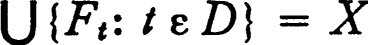.
Then the function f such that f(x) = inf {t: x ε Ft} is continuous.
PROOF According to 3.1 a function is continuous if the inverse of each member of some subbase for the topology of the range space is open, and the family of all sets of the form {t: t < s] or {t: t > s}, for real numbers s, is a subbase for the usual topology for the set of real numbers. Consequently, to show f continuous it is sufficient to show that {x: f(x) < s} is open and {x: f(x) ≦ s}
is closed for each real s. In view of the previous lemma the first of these, {x: f(x) < s}, is the union of open sets Ft and is therefore open. With reference again to the previous lemma, 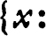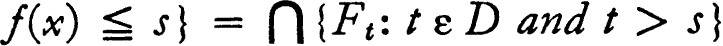: t ε D and t > s}, and the proof will be complete if we show this set is identical with 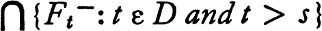. Since Ft ⊂ Ft– for each t, surely ∩{Ft: t ε D and t > s} ⊂ ∩ {Ft–: t ε D and t > s}. On the other hand, for each t in D with t > s there is r in D such that s < r < t, and hence such that Fr– ⊂ Ft. The reverse inclusion follows. ∎
The principal result of the section is now easily proved.
4 LEMMA (URYSOHN) If A and B are disjoint closed subsets of a normal space X, then there is a continuous function f on X to the interval [0,1] such that f is zero on A and one on B.
PROOF Let D be the set of positive dyadic rational numbers (that is, the set of all numbers of the form p2–q, where p and q are positive integers). For t in D and t > 1 let F(t) = X, let F(1) = X ~ B and let F(0) be an open set containing A such that F(0)– is disjoint from B. For t in D and 0 < t < 1 write t in the form t = (2m + 1)2–n and choose, inductively on n, F(t) to be an open set containing F(2m2–n) – and such that F(t) – ⊂ F((2m + 2)2–n). This choice is possible because X is normal. Let f(x) = inf {t: x ε F(t)}. The previous lemma shows that f is continuous. The function f is zero on A because A ⊂ F(t) for each t in D, and f is one on B because F(t) ⊂ X ~ B for t ≦ 1 and F(t) = X for t > 1. ∎
EMBEDDING IN CUBES
The cartesian product of closed unit intervals, with the product topology, is called a cube. A cube is then the set QA of all functions on a set A to the closed unit interval Q, with the topology of pointwise, or coordinate-wise, convergence. The cube is used as a standard sort of space, and we want to describe those topological spaces which are homeomorphic to subspaces of cubes. The device used to accomplish this description is simple but noteworthy; it will be used again in other connections.
Suppose that F is a family of functions such that each member f of F is on a topological space X to a space Yf (the range may be different for different members of the family). There is then a natural mapping of X into the product 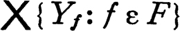 which is defined by mapping a point x of X into the member of the product whose f-th coordinate is f(x). Formally, the evaluation map e is defined by: e(x)f =f(x). It turns out that e is continuous if the members of F are continuous and e is a homeomorphism if, in addition, F contains “enough functions.” A family F of functions on X distinguishes points iff for each pair of distinct points x and y there is f in F such that f(x) ≠ f(y). The family distinguishes points and closed sets iff for each closed subset A of X and each member x of X ~ A there is f in F such that f(x) does not belong to the closure of f [A].
5 EMBEDDING LEMMA Let F be a family of continuous functions, each member f being on a topological space X to a topological space Yf. Then:
(a)The evaluation map e is a continuous function on X to the product space .
(b)The function e is an open map of X onto e[X] if F distinguishes points and closed sets.
(c)The function e is one to one if and only if F distinguishes points.
PROOF The map e followed by projection Pf into the f-th coordinate space is continuous because Pf ∘ e(x) =f(x). Consequently, by theorem 3.3, e is continuous. To prove statement (b) it is sufficient to show that the image under e of an open neighborhood U of a point x contains the intersection of e[X] and a neighborhood of e(x) in the product. Choose a member f of F such that f(x) does not belong to the closure of f[X ~ U]. The set of all y in the product such that 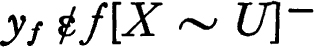 is open, and evidently its intersection with e[X] is a subset of e[U]. Hence e is an open map of X onto e[X]. Statement (c) is clear. ∎
The preceding lemma reduces the problem of embedding a space topologically in a cube to the problem of finding a “rich” set of continuous real-valued functions on the space. There are topological spaces on which each continuous real-valued function is constant. For example, any indiscrete space has this property. There are less trivial examples; there are regular Hausdorff spaces on which every real continuous function is constant.* A topological space X is called completely regular iff for each member x of X and each neighborhood U of x there is a continuous function f on X to the closed unit interval such that f(x) = 0 and f is identically one on X ~ U. It is clear that the family of all continuous functions on a completely regular space to the unit interval [0,1] distinguishes points and closed sets, in the sense of the preceding lemma. (The converse statement is also true, but will not be needed here.) If a completely regular space is T1 ({x} is closed for each x), then the family of continuous functions on the space to [0,1] also distinguishes points. A completely regular T1-space is called a Tychonoff space. If X is a Tychonoff space and F is the family of all continuous functions on X to [0,1], then the embedding lemma 4.5 shows that the evaluation map of X into the cube QF is a homeomorphism. Thus each Tychonoff space is homeomorphic to a subspace of a cube. This fact is actually characteristic of Tychonoff spaces, as will presently be demonstrated.
Each normal T1-space is a Tychonoff space in view of Urysohn’s lemma 4.4. Each completely regular space is regular, for if U is a neighborhood of x and f is a continuous function which is zero at x and one on X ~ U, then V = {y: f(y) < ½} is an open set whose closure is contained in {y: f(y) ≦ ½}, which is a subset of U. For T1-spaces there is a hierarchy of so-called separation axioms: Hausdorff, regular, completely regular, and normal. Except for normality, these properties are hereditary, in the sense that each subspace of a space X enjoys the property if X does. The product of spaces of each of these types is again of the same type, excepting, again, normality. The proofs of these facts are left as problems (4.H) except for the following, which is needed now.
6 THEOREM The product of Tychonoff spaces is a Tychonoff space.
PROOF For convenience, let us agree that a continuous function f on a topological space X to the closed unit interval is for a pair (X,U) iff x is a point, U is a neighborhood of x, f(x) = 0, and f is identically one on X ~ U. If f1, …, fn are functions for (x,U1), …, (x,Un), where n is a positive integer, and if g(x) = sup {fi(x) : i = 1, …,n}, then g is a function for 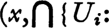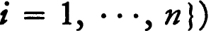. Consequently the space is completely regular if for each x and each neighborhood U of x belonging to some sub-base for the topology there is a function for (x,U). If X is the product 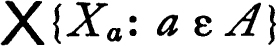 of Tychonoff spaces and x ε X let Ua be a neighborhood of xa in Xa. If f is a function for (xa, Ua), then f ∘ Pa, where Pa is the projection into the a-th coordinate space, is a function for (x,Pa–1[Ua]). The family of sets of the form Pa–1[Ua] is a subbase for the product topology and hence the product space is completely regular. Since the product of T1-spaces is a T1-space the theorem follows. ∎
7 EMBEDDING THEOREM In order that a topological space be a Tychonoff space it is necessary and sufficient that it be homeomorphic to a subspace of a cube.
PROOF The closed unit interval is a Tychonoff space, and hence a cube, being a product of unit intervals, is a Tychonoff space by 4.6. Each subspace of a cube is therefore a Tychonoff space. It has already been observed that if X is a Tychonoff space and F the set of all continuous functions on X to the closed unit interval Q, then (by the embedding lemma 4.5) the evaluation map is a homeomorphism of X into the cube QF. ∎
METRIC AND PSEUDO-METRIC SPACES
There are many topological spaces in which the topology is derived from a notion of distance. A metric for a set X is a function d on the cartesian product X × X to the non-negative reals such that for all points x, y, and z of X,
(a)d(x,v) = d(y,x),
(b)(triangle inequality) d(x,y) + d(y,z) ≧ d(x,z),
(c)d(x,y) = 0 if x = y, and
(d)if d(x,y) = 0, then x = y.
The last of these conditions is inessential for many purposes. A function d which satisfies only (a) and (b) and (c) is called a pseudo-metric (sometimes an écart, although “écart” is also used in a slightly different sense). All of the definitions of this section will be made for pseudo-metrics, it being understood that the same definitions are to hold with “pseudo-metric” replaced by “metric.”
A pseudo-metric space is a pair (X,d) such that d is a pseudo-metric for X. For members x and y of X the number d(x,y) is the distance (if confusion seems possible the d-distance) from x to y. If r is a positive number the set {y: d(x,y) < r) is the open sphere of d-radius r about x, or briefly the open r-sphere about x, and {y: d{x,y) ≦ r) is the closed r-sphere about x. The intersection of two open spheres may not be a sphere. However, if d(x,y) < r and d(x,z) < s, then each point w such that d(w,x) < min [r – d(x,y), s – d(x,z)] is a member of both the open r-sphere about y and the open s-sphere about z because of the triangle inequality. Consequently the intersection of two open spheres contains an open sphere about each of its points, and hence the family of all open spheres is the base for a topology for X (see 1.11). This topology is the pseudo-metric topology for X. Observe that each closed sphere is closed relative to the pseudo-metric topology.
Let X be a set and define d(x,y) to be zero if x = y and one otherwise. Then d is a metric for X and the open 1-sphere about each point x is {x}; hence {x} is open relative to the metric topology and the space is discrete. The closed 1-sphere about each point is X and it follows that the closure of an open r-sphere may be different from the closed r-sphere. If d is defined to be zero for all pairs (x,y) in X × X, then d is not a metric, but is a pseudo-metric. Then the open r-sphere about each point is the entire space, and the pseudo-metric topology for X is the indiscrete topology. If X is the set of all real numbers and d(x,y) = |x – y | then d is a metric for X; it is called the usual metric for the real numbers. The usual metric topology is fortunately the usual topology for the reals.
The distance from a point x to a non-void subset A of a pseudo-metric space is defined to be D(A,x) = inf {d(x,y):y ε A).
8 THEOREM If A is a fixed subset of a pseudo-metric space, then the distance from a point x to A is a continuous function of x relative to the pseudo-metric topology.
PROOF Since d(x,z) ≦ d(x,v) + d(y,z) it follows, taking lower bounds for z in A, that D(A,x) ≦ d(x,y) + D(A,y). The same inequality holds with x and y interchanged and hence | D(A,x) – D(A,y) | ≦ d(x,y). Consequently, if y is in the open r-sphere about x, then | D(A,x) – D(A,y) | < r and continuity follows. ∎
9 THEOREM The closure of a set A in a pseudo-metric space is the set of all points which are zero distance from A.
PROOF Since D(A,x) is continuous in x the set {x: D(A,x) = 0} is closed and contains A and hence contains the closure A– of A. If 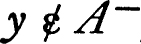, then there is a neighborhood of y, which may be taken to be an open r-sphere, which does not intersect A. Consequently D(A,y) ≧ r and hence {x: D(A,x) = 0} ⊂ A–. Therefore A– = {x: D(A,x) =0}. ∎
10 THEOREM Each pseudo-metric space is normal.
PROOF Let A and B be disjoint closed subsets of a pseudo-metric space X, and let D(A,x) and D(B,x) be the distance from x to A and B respectively. Let U = {x: D(A,x) – D(B,x) < 0} and let V = {x: D(A,x) – D(B,x) > 0}. The function D(A,x) – D(B,x) is continuous in x and therefore U and V are open. Clearly U is disjoint from V, and using 4.9 it follows that A ⊂ U and B ⊂ V. ∎
11 THEOREM Every pseudo-metric space satisfies the first axiom of countability. The second is satisfied if and only if the space is separable.
PROOF A set is open relative to the pseudo-metric topology iff it contains an open sphere about each of its points. Therefore the family of open spheres about a point x is a base for the neighborhood system of x. Since each open sphere about x contains a sphere with rational radius there is a countable base for the neighborhood system and the space satisfies the first axiom of countability. Each space which satisfies the second axiom of countability is separable, so it remains to prove that a separable pseudo-metric space has a countable base for its topology. Let Y be a countable dense subset and let  be the family of all open spheres with rational radii about members of Y. Surely
be the family of all open spheres with rational radii about members of Y. Surely  is countable. If U is a neighborhood of a point x there is, for some positive r, an open r-sphere about x which is contained in U. Let s be a positive rational number less than r, let y be a point of Y such that d(x,y) < s/3, and let V be the open 2s/3 sphere about y. Then x ε V ⊂ U and hence
is countable. If U is a neighborhood of a point x there is, for some positive r, an open r-sphere about x which is contained in U. Let s be a positive rational number less than r, let y be a point of Y such that d(x,y) < s/3, and let V be the open 2s/3 sphere about y. Then x ε V ⊂ U and hence  is a base for the topology. ∎
is a base for the topology. ∎
12 THEOREM A net {Sn, n ε D} in a pseudo-metric space (X,d) converges to a point s if and only if {d(Sn,s), n ε D} converges to zero.
PROOF A net {Sn, n ε D] converges to s iff the net is eventually in each open r-sphere about s, but this is true iff {d(Sn, s), n ε D] is eventually in each open r-sphere about 0 in the space of real numbers with the usual metric. ∎
The diameter of a subset A of a pseudo-metric space (X,d) is sup {d(x,y): x ε A and y ε A}. If this supremum does not exist the diameter is said to be infinite. It is interesting to notice that the property of having a finite diameter is not a topological invariant.
13 THEOREM Let (X, d) be a pseudo-metric space, and let e(x,y) = min [1,d(x,y)]. Then (X,e) is a pseudo-metric space whose topology is identical with that of (X,d).
Consequently each pseudo-metric space is homeomorphic to a pseudo-metric space of diameter at most one.
PROOF To prove that e is a pseudo-metric it is sufficient to show that if a, b, and c are non-negative numbers such that a + b ≧ c, then min [1,a] + min [1,b] ≧ min [1,c], for the latter inequality becomes the triangle inequality for ε if we set a = d(x,y), b = d(y,z) and c = d(x,z). If either min [1,a] or min [1,b] is one the inequality is surely correct since min [1,c] ≦ 1. If neither of these is one the inequality a + b ≧ c ≧ min [1,c] completes the proof. Consequently e is a pseudo-metric for X, The family of all open r-spheres, for r less than one, is a base for the pseudo-metric topology. Since this family is the same whether d or e is used as pseudo-metric, the two pseudo-metric topologies are identical. Clearly the e-diameter of X is at most one. ∎
The product of uncountably many topological spaces does not generally satisfy the first axiom of countability (see 3.6) and consequently one cannot expect to find a pseudo-metric for the product of arbitrarily many pseudo-metric spaces such that the pseudo-metric topology is the product topology. For countable products the situation is pleasant. Because of the previous theorem we restrict our attention to spaces of diameter at most one.
14 THEOREM Let {(Xn,dn), n ε ω} be a sequence of pseudo-metric spaces, each of diameter at most one, and define d by: d(x,y) = ∑{2–ndn(xn,yn): n ε ω}. Then d is a pseudo-metric for the cartesian product, and the pseudo-metric topology is the product topology.
PROOF The simple proof that d is a pseudo-metric is omitted. (Problem 2.G on summability contains the necessary machinery.) To show the two topologies identical, first observe that, if V is a 2–p-sphere about a point x of the product and U = {y: dn(xn,yn) < 2–p–n–2 for n ≦ p + 2}, then U ⊂ V, for if y ε U, then d(x,y) < ∑{2–p–n–2: n = 0, …,p + 2] + ∑{2–n: n = p + 3, … } < 2–p–1 + 2–p–1 = 2–p. But U is a neighborhood of x in the product topology and it follows that each set which is open relative to the pseudo-metric topology is open relative to the product topology. To show the converse consider a member U of the defining subbase of the product topology. Then U is of the form {x: xn ε W} where W is open in Xn. For x in U there is an open r-sphere about xn which is a subset of W, and since d(x,y) ≧ 2–ndn(xn,yn) the open r2–n-sphere about x is a subset of U. Therefore each member of the defining subbase, and consequently each member of the product topology, is open relative to the pseudo-metric topology. ∎
If (X,d) and (Y,e) are pseudo-metric spaces and f is a map of X onto Y, then f is an isometry (a d-e isometry) iff d(x,y) = e(f(x),f(y)) for all points x and y of X. Every isometry is a continuous open map (relative to the two pseudo-metric topologies) because the image of each open r-sphere about x is an open r-sphere about f(x). The composition of two isometrics is again an isometry and if an isometry is one to one the inverse is also an isometry. On a metric space an isometry is necessarily one to one and an isometry of a metric space onto a metric space is a homeomorphism. The collection of all metric spaces is divided into equivalence classes of mutually isometric spaces. Each property which, when possessed by a metric space, is also possessed by each isometric metric space, is a metric invariant. A metric invariant is not necessarily a topological invariant (for example, consider the property of being of infinite diameter).
Each pseudo-metric space differs but little, in one sense, from a metric space. In making this statement precise it is convenient to agree that the distance between two subsets, A and B, of a pseudo-metric space is D(A,B) = dist (A,B) = inf {d(x,y): x ε A and y ε B}. It is generally not true that D is a pseudo-metric, for the space X is zero distance from every non-void subset and the triangle inequality fails. However, D is actually a metric for the members of the decomposition which we want to consider. For a pseudo-metric space (X,d) let  be the family of all sets of the form {x}–. Because of 4.9, {x}– is precisely the set of all points y such that d(x,y) = 0, and the decomposition
be the family of all sets of the form {x}–. Because of 4.9, {x}– is precisely the set of all points y such that d(x,y) = 0, and the decomposition  is the quotient X/R where R is the relation {(x,y): d{x,y) = 0}.
is the quotient X/R where R is the relation {(x,y): d{x,y) = 0}.
15 THEOREM Let (X, d) be a pseudo-metric space, let  be the family of all sets {x}– for x in X, and for members A and B of
be the family of all sets {x}– for x in X, and for members A and B of  let D(A,B) = dist (A,B). Then (
let D(A,B) = dist (A,B). Then ( ,D) is a metric space whose topology is the quotient topology for
,D) is a metric space whose topology is the quotient topology for  , and the projection of X onto
, and the projection of X onto  is an isometry.
is an isometry.
PROOF A point u is a member of {x}– iff d(u,x) = 0, and this is true iff x ε {u}–. If u ε {x}– and v ε {y}–, then d(u,v) ≦ d(u, x) + d(x,y) + d{y, v) = d{x, y). Consequently, since in this case it is also true that x ε {u}– and y ε {v}–, d(u,v) = d(x,y). It follows that for members A and B of  , D(A,B) is identical with d(x,y) for every x in A and every y in B. Therefore (
, D(A,B) is identical with d(x,y) for every x in A and every y in B. Therefore ( ,D) is a metric space and the projection of X onto
,D) is a metric space and the projection of X onto  is an isometry. If U is an open set in X and x ε U, then, for some r > 0, U contains an open r-sphere about x, and hence contains {x}–. The projection of X onto
is an isometry. If U is an open set in X and x ε U, then, for some r > 0, U contains an open r-sphere about x, and hence contains {x}–. The projection of X onto  is therefore an open map relative to the quotient topology for
is therefore an open map relative to the quotient topology for  , by 3.10. The projection is also open relative to the metric topology derived from D and hence, by 3.8, these two topologies are identical. ∎
, by 3.10. The projection is also open relative to the metric topology derived from D and hence, by 3.8, these two topologies are identical. ∎
METRIZATION
Given a topological space (X, ), it is natural to ask whether there is a metric for X such that
), it is natural to ask whether there is a metric for X such that  is the metric topology. Such a metric metrizes the topological space and the space is said to be metrizable. Similarly, a topological space is pseudo-metrizableiff there is a pseudo-metric such that the topology is the pseudo-metric topology. A pseudo-metric is a metric if and only if the topology is T1 (that is, iff {x} is closed for each point x) and it follows that a space is metrizable if and only if it is T1 and pseudo-metrizable. The theorems of this section are stated for metrizable spaces; the corresponding theorems for pseudo-metrizable spaces will be self-evident.
is the metric topology. Such a metric metrizes the topological space and the space is said to be metrizable. Similarly, a topological space is pseudo-metrizableiff there is a pseudo-metric such that the topology is the pseudo-metric topology. A pseudo-metric is a metric if and only if the topology is T1 (that is, iff {x} is closed for each point x) and it follows that a space is metrizable if and only if it is T1 and pseudo-metrizable. The theorems of this section are stated for metrizable spaces; the corresponding theorems for pseudo-metrizable spaces will be self-evident.
The two principal theorems of the section give necessary and sufficient conditions that a topological space be, respectively, metrizable and separable, and metrizable. The first of these is the classical metrization theorem of Urysohn; all of the pieces of its proof are already available and it is simply a matter of fitting the facts together. The second theorem has been proved only recently (its history is given in the notes at the end of the section). It turns out that a mild variant of Urysohn’s procedure proves the sufficiency of the conditions imposed, but the necessity requires a new sort of construction. A further study of the concepts introduced here is made in the last section of chapter 5. Finally, the entire problem of metrization is approached from a different point of view in chapter 7; however, the results obtained there do not include the theorems of this section.
The pattern for a proof of metrizability is very simple. According to 4.14 the product of countably many pseudo-metric spaces is pseudo-metrizable. According to the embedding lemma 4.5, if F is a family of continuous functions on a T1-space X, where a member f of F maps X into a space Yf, then the evaluation map of X into 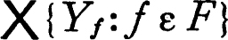 is a homeomorphism whenever F distinguishes points and closed sets (that is, if A is a closed subset of X and A; is a member of X ~ A, then 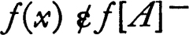 for some member f of F). The problem of metrizing a T1-space X then reduces to that of finding a countable family of continuous functions, each on X to some pseudo-metrizable space, such that F distinguishes points and closed sets. (A pseudo-metrizable T1-space is necessarily metrizable.)
For convenience, let Qω denote the product of the closed unit interval with itself countably many times; that is Qω is the set of all functions on the non-negative integers to the closed unit interval Q, with the product topology.
16 METRIZATION THEOREM (URYSOHN) A regular T1-space whose topology has a countable base is homeomorphic to a subspace of the cube Qω and is hence metrizable.
PROOF In view of the remarks preceding the theorem it is sufficient to show that there is a countable family of continuous functions on X to Q which distinguishes points and closed sets. Let  be a countable base for the topology of X and let
be a countable base for the topology of X and let  be the set of all pairs (U,V) such that U and V belong to
be the set of all pairs (U,V) such that U and V belong to  and U– ⊂ V. Surely
and U– ⊂ V. Surely  is countable. For each pair (U,V) in
is countable. For each pair (U,V) in  choose a continuous function f on X to Q such that f is zero on U and one on X ~ V (such a function exists because of the Tychonoff lemma 4.1 and the Urysohn lemma 4.4) and let F be the family of functions so obtained. Then F is countable and it remains to be proved that F distinguishes points and closed sets. If B is closed and x ε X ~ B choose a member V of
choose a continuous function f on X to Q such that f is zero on U and one on X ~ V (such a function exists because of the Tychonoff lemma 4.1 and the Urysohn lemma 4.4) and let F be the family of functions so obtained. Then F is countable and it remains to be proved that F distinguishes points and closed sets. If B is closed and x ε X ~ B choose a member V of  such that x ε V ⊂ X ~ B and choose U in
such that x ε V ⊂ X ~ B and choose U in  such that x ε U– ~ ⊂ V. Then (U,V) ε
such that x ε U– ~ ⊂ V. Then (U,V) ε  , and if f is the corresponding member of F, then 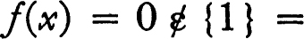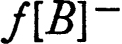. ∎
, and if f is the corresponding member of F, then 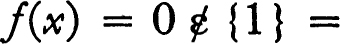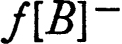. ∎
It is easy to describe the class of topological spaces to which the foregoing metrization theorem applies.
17 THEOREM If X is a T1-space, then the following are equivalent:
(a)X is regular and there is a countable base for its topology.
(b)X is homeomorphic to a subspace of the cube Qω.
(c)X is metrizable and separable.
PROOF The previous theorem shows that (a) → (b). The cube Qω is metrizable, by 4.14, and satisfies the second axiom of countability (3.M). Hence each subspace is metrizable and satisfies the second axiom of countability and is therefore separable. Hence (b) → (c). (Caution: it is not true that a subspace of a separable space is necessarily separable.) Finally (c) → (a), for if X is metrizable and separable, then it is surely regular and by 4.11 it satisfies the second axiom of countability. ∎
The metrization theorem for spaces which are not necessarily separable depends heavily on the ideas which we have already exploited. A brief discussion of methodology will indicate where the procedure used so far can be improved. The construction of a metric for X is accomplished by finding a family of mappings of X into pseudo-metrizable spaces. But observe: so far the only space which has been used as the range space is the unit interval Q. Stated in slightly different form, if f is a function on X to Q, then one may construct a pseudo-metric for X by letting d(x,y) = | f(x) – f(y) |. The Urysohn metrization is accomplished by using a countable number of pseudo-metrics of this sort, and the problem is to generalize this construction. If F is a family of functions on X to Q, then a possible candidate for a pseudo-metric is the sum : ∑ {| f(x) – f(y) | : f ε F}. This sum must be continuous in x and y in order that the identity map of X into the pseudo-metric space (X,d) be continuous, and a condition much weaker than finiteness of the family F will ensure continuity. It is sufficient, to obtain continuity, that for each point x of X there be a neighborhood U of x such that all but a finite number of the members of F vanish on U; in other words, a sort of local finiteness suffices. This notion of local finiteness is the key to the problem.
A family  of subsets of a topological space is locally finite iff each point of the space has a neighborhood which intersects only finitely many members of
of subsets of a topological space is locally finite iff each point of the space has a neighborhood which intersects only finitely many members of  . It follows immediately from the definition that a point is an accumulation point of the union 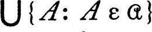 iff it is an accumulation point of some member of
. It follows immediately from the definition that a point is an accumulation point of the union 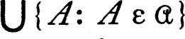 iff it is an accumulation point of some member of  , and hence the closure of the union is the union of the closures; that is, 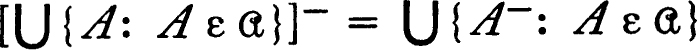. It is also evident that the family of all closures of members of
, and hence the closure of the union is the union of the closures; that is, 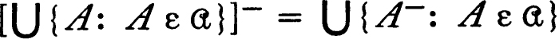. It is also evident that the family of all closures of members of  is locally finite. A family
is locally finite. A family  is discrete if each point of the space has a neighborhood which intersects at most one member of
is discrete if each point of the space has a neighborhood which intersects at most one member of  . A discrete family is locally finite, and if
. A discrete family is locally finite, and if  is discrete, then the family of closures of members of
is discrete, then the family of closures of members of  is also discrete. Finally, a family
is also discrete. Finally, a family  is σ-locally finite (σ-discrete) if and only if it is the union of a countable number of locally finite (respectively, discrete) subfamilies.
is σ-locally finite (σ-discrete) if and only if it is the union of a countable number of locally finite (respectively, discrete) subfamilies.
The following metrization theorem can now be stated. Its proof is contained in the sequence of lemmas which follows the statement.
18 METRIZATION THEOREM The following three conditions on a topological space are equivalent.
(a)The space is metrizable.
(b)The space is T1 and regular, and the topology has a σ-locally finite base.
(c)The space is T1 and regular, and the topology has a σ-discrete base.
It is clear that condition (c) implies (b) and it will be proved that (b) implies (a), and finally that (a) implies (c). The first step in the proof is a variant of Tychonoff’s lemma, 4.1.
19 LEMMA A regular space whose topology has a σ-locally finite base is normal.
PROOF If A and B are disjoint closed subsets of the space X, then there are open covers  and
and  of A and B respectively such that the closure of each member of
of A and B respectively such that the closure of each member of  is disjoint from B, the closure of each member of
is disjoint from B, the closure of each member of  is disjoint from A, and both
is disjoint from A, and both  and
and  are subfamilies of a σ-locally finite base
are subfamilies of a σ-locally finite base  . It follows that 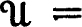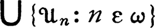 and 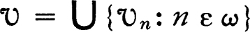 where
. It follows that 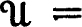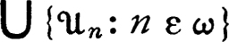 and 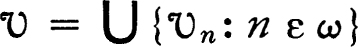 where  and
and  are locally finite families. Let 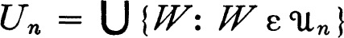 and let 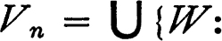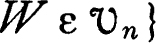. Then 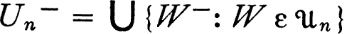, and hence Un– is disjoint from B and similarly Vn– is disjoint from A. This is precisely the situation which occurs in the proof of 4.1, and as there, the proof is completed by letting 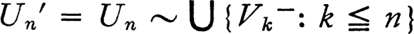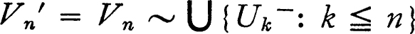. The union of the sets Un′ and the union of the sets Vn′ are the required disjoint neighborhoods of A and B respectively. ∎
are locally finite families. Let 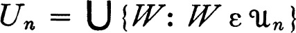 and let 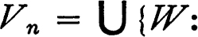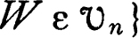. Then 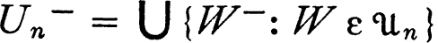, and hence Un– is disjoint from B and similarly Vn– is disjoint from A. This is precisely the situation which occurs in the proof of 4.1, and as there, the proof is completed by letting 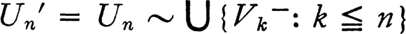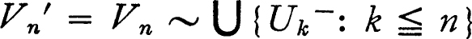. The union of the sets Un′ and the union of the sets Vn′ are the required disjoint neighborhoods of A and B respectively. ∎
The following lemma now completes the proof that the conditions listed in 4.18 are sufficient for metrizability.
20 LEMMA A regular T1-space whose topology has a σ-locally finite base is metrizable.
PROOF It will be shown that there is a countable family D of pseudo-metrics on the space X such that each member of D is continuous on X × X and such that for each closed subset A of X and each point x of X ~ A there is a member d of D such that the d-distance from x to A is positive. This will prove metrizability, for the map of X into each of the pseudo-metric spaces (X,d) will then be continuous, and 4.5 and 4.14 will apply just as for the Urysohn theorem. The problem is then to construct the family D. Let  be a σ-locally finite base for the topology of X, and suppose that 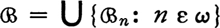 where each 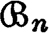 is locally finite. For every ordered pair of integers m and n and for each member U of 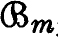, let U′ be the union of all members of whose closures are contained in U. Because is locally finite the closure of U′ is a subset of U, and there is a continuous function fU on X to the unit interval which is one on U′ and zero on X ~ U by 4.19 and 4.4. Let d{x,y) = ∑{|fU (x) – fU(y) |: 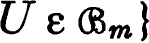. The continuity of d on X × X is a straightforward consequence of the local finiteness of . Finally, let D be the family of pseudo-metrics so obtained; since one pseudo-metric was constructed for each ordered pair of integers, D is countable. If A is a closed subset of X and x ε X ~ A, then for some m and some U in it is true that x ε U ⊂ X ~ A, and for some n and some V in it is true that x ε V and V– ⊂ U. For the pseudo-metric d constructed for this pair it is clear that the d-distance from x to A is at least one. ∎
be a σ-locally finite base for the topology of X, and suppose that 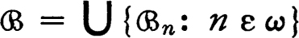 where each 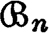 is locally finite. For every ordered pair of integers m and n and for each member U of 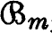, let U′ be the union of all members of whose closures are contained in U. Because is locally finite the closure of U′ is a subset of U, and there is a continuous function fU on X to the unit interval which is one on U′ and zero on X ~ U by 4.19 and 4.4. Let d{x,y) = ∑{|fU (x) – fU(y) |: 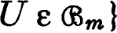. The continuity of d on X × X is a straightforward consequence of the local finiteness of . Finally, let D be the family of pseudo-metrics so obtained; since one pseudo-metric was constructed for each ordered pair of integers, D is countable. If A is a closed subset of X and x ε X ~ A, then for some m and some U in it is true that x ε U ⊂ X ~ A, and for some n and some V in it is true that x ε V and V– ⊂ U. For the pseudo-metric d constructed for this pair it is clear that the d-distance from x to A is at least one. ∎
The most interesting part of the proof of the metrization theorem remains. It must be proved that each metric space has a σ-discrete base. A stronger result than this is true and, since the more potent theorem will be needed later, we introduce a new concept. A cover  of a set X is a refinement of a cover
of a set X is a refinement of a cover  iff each member of
iff each member of  is a subset of a member of
is a subset of a member of  . For example, in a metric space, the family of all open spheres of radius one half is a refinement of the family of all open spheres of radius one. The following theorem states that any open cover of a pseudo-metric space has an open refinement which is σ-discrete. This will imply that each pseudo-metric topology has a σ-discrete base, for one may select a σ-discrete refinement of the cover consisting of all open spheres of radius 1/n, and the union of the families is then a σ-discrete base. This fact completes the proof of the metrization theorem 4.18.
. For example, in a metric space, the family of all open spheres of radius one half is a refinement of the family of all open spheres of radius one. The following theorem states that any open cover of a pseudo-metric space has an open refinement which is σ-discrete. This will imply that each pseudo-metric topology has a σ-discrete base, for one may select a σ-discrete refinement of the cover consisting of all open spheres of radius 1/n, and the union of the families is then a σ-discrete base. This fact completes the proof of the metrization theorem 4.18.
21 THEOREM Each open cover of a pseudo-metrizable space has an open σ-discrete refinement.
PROOF Let  be an open cover of the pseudo-metric space (X,d). The first step in the proof is the decomposition of each member U of
be an open cover of the pseudo-metric space (X,d). The first step in the proof is the decomposition of each member U of  into “concentric disks.” For each positive integer n and each member U of
into “concentric disks.” For each positive integer n and each member U of  let Un be the set of all members x of U such that dist [x,X ~ U] ≧ 2–n. Because of the triangle inequality it is clear that dist [Un,X ~ Un+1] ≧ 2–n – 2–n–1 = 2–n–1. Choose a relation < which well orders the family
let Un be the set of all members x of U such that dist [x,X ~ U] ≧ 2–n. Because of the triangle inequality it is clear that dist [Un,X ~ Un+1] ≧ 2–n – 2–n–1 = 2–n–1. Choose a relation < which well orders the family  (see 0.25h) and for each positive integer n and each member U of
(see 0.25h) and for each positive integer n and each member U of  let 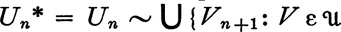 and V < U}. For each U and V in
let 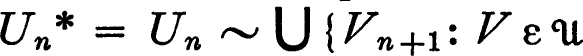 and V < U}. For each U and V in  and each positive integer n it is true that Un* ⊂ X ~ Vn+1, or Vn* ⊂ X ~ Un+1, depending on whether U follows or precedes V in the ordering. In either case dist [Un*,Vn*] ≧ 2–n–1. It follows that if Un~ is defined to be the set of all points x such that the distance from x to Un* is less than 2–n–3, then dist [Un~,Vn~] ≧ 2–n–2 and hence for each fixed n the family of all sets of the form Un~ is discrete. Let
and each positive integer n it is true that Un* ⊂ X ~ Vn+1, or Vn* ⊂ X ~ Un+1, depending on whether U follows or precedes V in the ordering. In either case dist [Un*,Vn*] ≧ 2–n–1. It follows that if Un~ is defined to be the set of all points x such that the distance from x to Un* is less than 2–n–3, then dist [Un~,Vn~] ≧ 2–n–2 and hence for each fixed n the family of all sets of the form Un~ is discrete. Let  be the family of Un~ for all n and all U in
be the family of Un~ for all n and all U in  . Then
. Then  is an open cover of X, for if U is the first member of
is an open cover of X, for if U is the first member of  to which x belongs, then surely x ε Un~ for some n. Evidently Un~ ⊂ U, and consequently
to which x belongs, then surely x ε Un~ for some n. Evidently Un~ ⊂ U, and consequently  is a σ-discrete open refinement of
is a σ-discrete open refinement of  . ∎
. ∎
22 Notes There are really two metrization problems. The topological problem has just been treated and the problem of uniform metrization will be considered in chapter 7 (statement and history are given there). Curiously enough a satisfactory solution of the latter was found much earlier than a solution of the former. Urysohn’s theorem, although treating only a special case, was certainly the most satisfactory theorem of the topological sort until very recently. The key to the present reasonably satisfactory situation was furnished by two papers. Dieudonné [1] initiated a study of spaces with the property that each open cover has an open locally finite refinement (paracompact spaces; see chapter 5). A. H. Stone [1] showed that each metrizable space is paracompact (a special case of this theorem was earlier demonstrated by C. H. Dowker [1]). The σ-locally finite characterization was then discovered independently, by Nagata [1] and by Smirnov [1]. The σ-discrete characterization is due to Bing [1]. The proof of necessity (4.21) of the metrizability conditions is actually an initial fragment of Stone’s proof of paracompactness.
Smirnov [2] has also showed that paracompactness together with local metrizability implies metrizability.
Finally a brief statement of the role of pseudo-metrizable spaces might be made. Most of the spaces which occur naturally in analysis are pseudo-metric rather than metric, and even in the metrization problem a construction via pseudo-metrics was convenient. Of course, one may always replace a pseudo-metric space by a related metric space (theorem 4.15), but the process of taking quotient spaces becomes a bit tedious and for most purposes the requirement d(x,y) = 0 iff x = y is completely irrelevant. One is tempted to work exclusively with pseudo-metrics, but this has disadvantages, for example, when one seeks to construct a topological map. A possible way out is to redefine “topological map” to mean a relation which induces a one-to-one intersection and union-preserving map on the topologies.
PROBLEMS
AREGULAR SPACES
(a) Let X be a regular space and let  be the family of all subsets of the form {x}– for x in X. Then
be the family of all subsets of the form {x}– for x in X. Then  is a decomposition of X, the projection of X onto the quotient space
is a decomposition of X, the projection of X onto the quotient space  is both open and closed, and the quotient space is regular Hausdorff. (If A is a subset of X which is either open or closed, then {x}– ⊂ A whenever x ε A.)
is both open and closed, and the quotient space is regular Hausdorff. (If A is a subset of X which is either open or closed, then {x}– ⊂ A whenever x ε A.)
(b) The product of regular spaces is again regular.
BCONTINUITY OF FUNCTIONS ON A METRIC SPACE
A function f on a pseudo-metric space (X,d) to a pseudo-metric space (Y,e) is continuous iff for each x in X and each ϵ > 0 there is δ > 0 such that e(f(x), f(y)) < ϵ if d(x,y) < δ.
CPROBLEM ON METRICS
Let f be a continuous real-valued function defined on the set of all non-negative real numbers, such that f(x) = 0 iff x = 0, f is non-decreasing, and f(x+y) ≦ f(x) + f(y) for all non-negative numbers x and y. (A function satisfying this last condition is called subadditive.) If (X,d) is a metric space and e(x,y) = f(d(x,y)), then (X,e) is a metric space, and the metric topology of the space (X,e) is identical with that of (X,d). (A particular case of this result which occurs frequently in the literature: f(x) = x/(1 + x).)
DHAUSDORFF METRIC FOR SUBSETS
Let (X,d) be a metric space of finite diameter, and let  be the family of all closed subsets. For r > 0 and A in
be the family of all closed subsets. For r > 0 and A in  let Vr(A) = {x: dist (x,A) < r}, and define, for members A and B of
let Vr(A) = {x: dist (x,A) < r}, and define, for members A and B of  , d′(A,B) = inf {r: A ⊂ Vr(B) and B ⊂ Vr(A)}. d′ is the Hausdorff metric; it is not the same as the distance between sets used in the text.
, d′(A,B) = inf {r: A ⊂ Vr(B) and B ⊂ Vr(A)}. d′ is the Hausdorff metric; it is not the same as the distance between sets used in the text.
(a) ( , d′) is a metric space, and the map which carries x in X into {x} in
, d′) is a metric space, and the map which carries x in X into {x} in  is an isometry of X onto a subspace of
is an isometry of X onto a subspace of  .
.
(b) The topology of the Hausdorff metric for  is not determined by the metric topology for X. For example, let X be the set of all positive real numbers, let d(x,y) = | x/(1 + x) –y/(1 +y)|, and let e(x,y) = min [1,| x – y |]. Then the metric topologies of (X,d) and (X,e) are identical, but those of (
is not determined by the metric topology for X. For example, let X be the set of all positive real numbers, let d(x,y) = | x/(1 + x) –y/(1 +y)|, and let e(x,y) = min [1,| x – y |]. Then the metric topologies of (X,d) and (X,e) are identical, but those of ( , d′) and (
, d′) and ( ,e′) are different. (In (
,e′) are different. (In ( , d′) the set of all positive integers is an accumulation point of the family of all its finite subsets.)
, d′) the set of all positive integers is an accumulation point of the family of all its finite subsets.)
Note For information and references on this topic see Michael [2].
EEXAMPLE (THE ORDINALS) ON THE PRODUCT OF NORMAL SPACES
The product of normal spaces is not generally normal.* Let Ω0 be the set of all ordinal numbers less than the first uncountable ordinal Ω and let Ω′ be Ω0 ∪ {Ω} each with the order topology.
(a) Interlacing lemma Let {xn, n ε ω} and {yn, n ε ω} be two sequences in Ω0 such that xn ≦ yn ≦ xn+1 for each n. Then both sequences converge, and to the same point of Ω0.
(b) If A and B are closed disjoint subsets of Ω0, then Ω, is not an accumulation point of both A and B.
(c) Both Ω0 and Ω′ are normal. (If A and B are closed disjoint subsets and the first point of A ∪ B belongs to A, find a finite sequence a0, b0, a1, … an (or bn) such that ai ε A, bi ε B, no point of A is between ai and bi, and no point of B is between bi and ai+1, for each i. The intervals (ai,bi] are both open and closed.)
(d) If f is a function on Ω0 to Ω0 such that f(x) ≧ x for each x, then for some x in Ω0 the point (x,x) is an accumulation point of the graph of f. (Define a sequence, inductively, such that xn+1 = f(xn), observe that xn ≦ f(xn) ≦ xn+1, and use the interlacing lemma.)
(e) The product Ω0 × Ω′ is not normal. (Let A be the set of all points (x,x), and let B = Ω0 × {Ω}. If U is a neighborhood of A let f(x) be the smallest ordinal larger than x such that 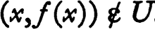. Then (d) applies.)
FEXAMPLE (THE TYCH0N0FF PLANK) ON SUBSPACES OF NORMAL SPACES
A subspace of a normal space may fail to be normal. Let Ω′ be the set of ordinal numbers not greater than the first uncountable ordinal Ω, and let ω′ be the set of ordinals not greater than the first infinite ordinal, ω, each with the order topology. The product Ω′ × ω′ is called the Tychonoff plank. It is not difficult to prove directly that the plank is normal; however, this fact is an immediate consequence of a theorem of the next chapter. Let X be (Ω′ × ω′) ~ {(Ω,ω)}, so that X is the plank with a corner point removed. Let A be the set of all points of X with first coordinate Ω and let B be the set of all points with second coordinate ω. Then there are no disjoint neighborhoods of A and B. (If U is a neighborhood of A, then for x in ω let f(x) be the first ordinal such that if y > f(x), then (y,x) ε U. The supremum of the values of f is less than Ω.)
GEXAMPLE: PRODUCTS OF QUOTIENTS AND NON-REGULAR HAUSDORFF SPACES
Let X be a regular Hausdorff space which is not normal, and let A and B be disjoint closed sets such that each neighborhood of A intersects each neighborhood of B. Let Δ be the set of all (x,x) for x in X (Δ is the identity relation on X).
(a) Let R = Δ ∪ (A × A). Then R is closed in X × X and the quotient space X/R is a Hausdorff space which is not regular. (The members of the quotient space are A, and {x} for x in X ~ A.)
(b) Let S = Δ ∪ (A × A) ∪ (B × B). Then S is closed in X × X, but X/S is not a Hausdorff space. (The members of X/S are A, B, and {x} for each x in X ~ {A ∪ B).)
(c) There is a natural map of X × X onto (X/S) × (X/S) which carries (x,y) into (S[x],S[y]). It is natural to ask whether this map is open, provided X/S is given the quotient topology and (X/S) × (X/S) and X × X are given the product topologies. (This is equivalent to asking whether the product of quotients is topologically equivalent to the quotient of the product.) If S is the relation defined in (b), then the map is not open. (Consider the neighborhood X × X ~ (A × A ∪ B × B ∪ Δ) of A × B.)
HHEREDITARY, PRODUCTIVE, AND DIVISIBLE PROPERTIES
A property P of a space is hereditary iff each subspace of a space with P also has P; it is productive iff the product of spaces enjoying P has P; and it is divisible iff the quotient space of each space with P has P. Consider the properties: T1, H = Hausdorff, R = regular, CR = completely regular, T = Tychonoff, N = normal, C = connected, S = separable, CI = first axiom of countability, CII = second countability axiom, M = metrizable, and L = Lindelöf. The following table is filled out + or –, depending on whether the property at the head of the column is or is not of the sort listed on the left. Show by example (most of the necessary examples have already been mentioned in the problems) or proof that the listing is correct.
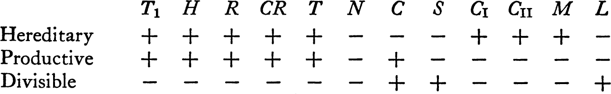
Quite different results are obtained if one varies the problem by considering only closed subspaces, or only open maps.
IHALF-OPEN INTERVAL SPACE
Let X be the set of all real numbers with the half-open interval topology (a base is the family of all half-open intervals [a,b); see 1.K and 1.L). Then:
(a) X is regular.
(b) X is normal. (Recall that every open cover of X has a countable subcover.)
(c) The product space X × X is not normal. (Let Y = {(x,y) : x + y = 1}, let A be the set of all members of Y with first coordinate irrational, and let B = Y ~ A. Assume that U and V are disjoint neighborhoods of A and B, and for x in A let f(x) = sup {e: [x,e) × [1 – x,e) ⊂ U}. Then f is a function on the set of all irrational numbers and f is never zero. The contradiction depends on the fact that for some positive integer n there is a rational number which is an accumulation point of {x: f(x) ≧ 1/n}. This fact is an immediate consequence of the theorem that the space of real numbers (with the usual topology) is of the second category (see chapter 7), but a direct proof seems awkward.)
Note This example is due to Sorgenfrey [1].
JTHE SET OF ZEROS OF A REAL CONTINUOUS FUNCTION
A subset of a topological space is called a Gδ iff it is the intersection of the members of a countable family of open sets.
(a) If f is a continuous real valued function on X, then f–1[0] is a Gδ. (The set {0} is a Gδ in the space of all real numbers.)
(b) If A is a closed Gδ in a normal topological space X, then there exists a continuous real-valued function f such that A = f–1[0].
KPERFECTLY NORMAL SPACES
A topological space is called perfectly normal iff it is normal and each closed subset is a Gδ.
(a) Each pseudo-metrizable space is perfectly normal.
(b) The product of an uncountable number of unit intervals is not perfectly normal. (A Gδ in such a space cannot consist of a single point.)
LCHARACTERIZATION OF COMPLETELY REGULAR SPACES
A topological space is completely regular iff it is homeomorphic to a subspace of a product of pseudo-metric spaces.
MUPPER SEMI-CONTINUOUS DECOMPOSITION OF A NORMAL SPACE
The image of a normal topological space under a closed continuous map is a normal space.
* This nomenclature is an excellent example of the time-honored custom of referring to a problem we cannot handle as abnormal, irregular, improper, degenerate, inadmissible, and otherwise undesirable. A brief discussion of the abnormalities of the class of normal spaces occurs in the problems at the end of the chapter.
* See Hewitt [1] and Novak [1], For other facts on separation axioms see van Est and Freudenthal [1].
* It is possible to do part of this problem a little more efficiently using methods from the following chapter. However, the facts given here will be useful later. I believe the example is due to J. Dieudonné and A. P. Morse, independently.